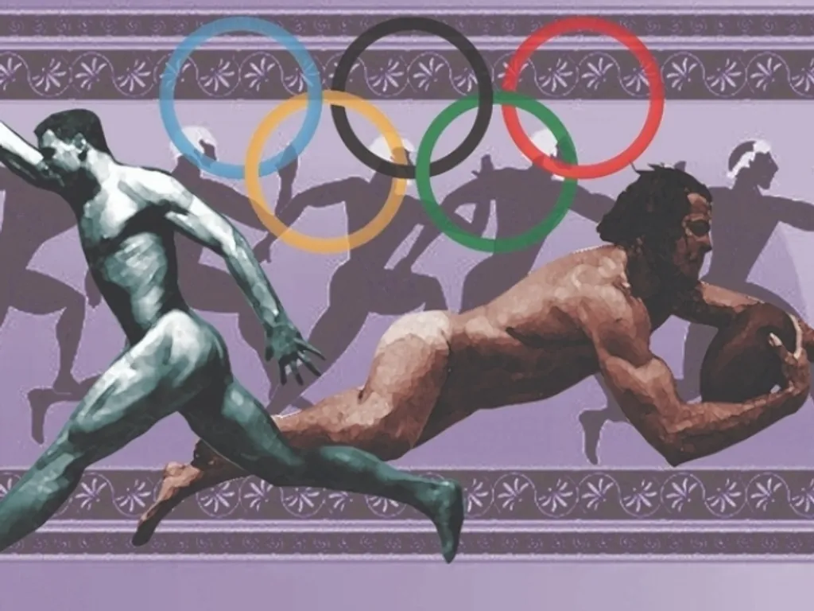

- Os Jogos Olímpicos surgiram na Grécia Antiga, na cidade de Olímpia, como competições esportivas em homenagem aos deuses gregos.
- Na mitologia grega, cada deus representava elementos da vida e da natureza. Poseidon era o deus dos mares, Hades governava o submundo e Zeus era considerado o rei dos deuses.
- Na Antiguidade, os gregos seguiam a religião baseada nos deuses da mitologia grega. Porém, após o surgimento do cristianismo, essa passou a ser a principal religião do país.
- Em muitos casamentos gregos existe o costume de quebrar pratos durante a festa, tradição que simboliza alegria, sorte e celebração.
- A Grécia possui mais de 6 mil ilhas e ilhotas espalhadas pelos mares Egeu e Mediterrâneo, mas apenas cerca de 200 delas são habitadas.
